Рекомендательные системы
Вопросы по рекомендательным системам.
-
Что такое рекомендательные системы?
Рекомендательная система - это модель или набор моделей, которые выбирают для пользователя релевантные объекты: товары, видео, статьи, музыку, вакансии, друзей или поисковые подсказки.
Обычно есть пользователи $u \in U$, объекты $i \in I$ и история взаимодействий:
$$ R = \{(u, i, y_{ui}, t, c)\}, $$
где $y_{ui}$ - сигнал интереса, $t$ - время, $c$ - контекст.
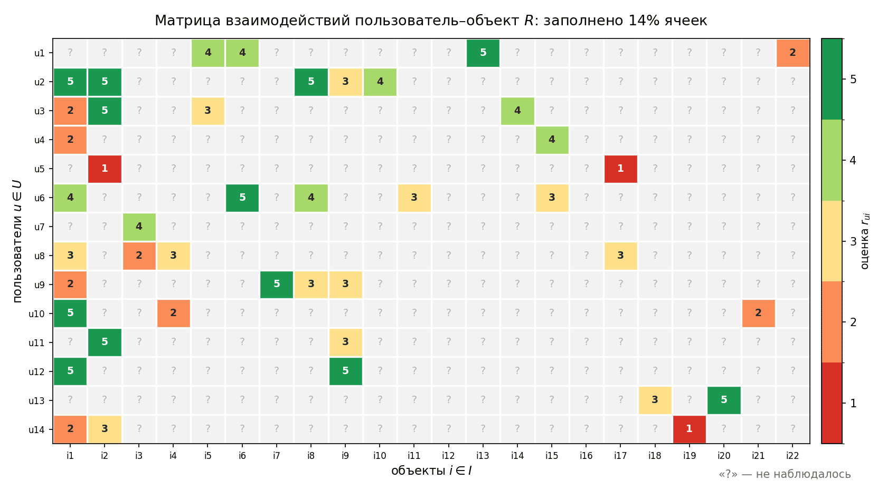
Игрушечная матрица $R$: 14 пользователей (строки) на 22 объекта (столбцы). Цветные ячейки — известные оценки от 1 (красный) до 5 (тёмно-зелёный), серые с вопросом — пары, по которым не было ни одного взаимодействия. Заполнено 14% ячеек, и это ещё оптимистично: в реальном каталоге плотность бывает 0.1% и ниже. Заметьте, что оценки скучены в левой части: у объектов i1-i10 их заметно больше, чем у i16-i22 — популярность уже перекошена в самих данных. Тип Идея Пример Collaborative filtering похожие пользователи или объекты "пользователи, похожие на вас, смотрели..." Content-based признаки объекта и профиля пользователя рекомендовать похожие статьи по тексту Hybrid смешать несколько источников сигнала CF + текст + категории Knowledge-based правила и ограничения домена подбор недвижимости по бюджету Context-aware учитывать контекст время суток, гео, устройство Explicit feedback - явная оценка: рейтинг, лайк, дизлайк, анкета.
Implicit feedback - неявный сигнал: клик, просмотр, покупка, досмотр, dwell time, добавление в корзину. В индустрии implicit feedback встречается чаще, но он шумнее: клик не всегда означает удовлетворение.
- User-item interaction matrix почти всегда разрежена: большинство пользователей видели малую долю каталога.
- Cold start возникает для новых пользователей или новых объектов без истории.
- Long-tail problem означает, что популярные объекты получают много показов, а нишевые редко получают шанс.
- Feedback loops усиливают прошлые решения системы: что показали, то и получило больше данных.
- Exposure bias и popularity bias мешают отличить настоящий интерес от эффекта видимости и популярности.
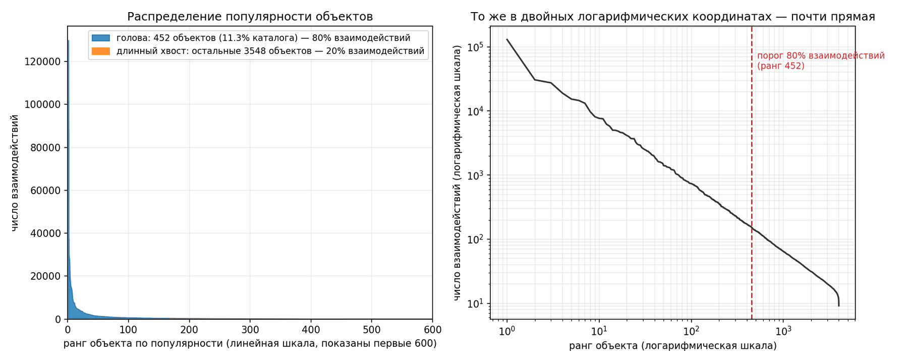
Синтетический каталог из 4000 объектов. Слева обе шкалы линейные и показаны только первые 600 рангов: синяя область — 452 объекта (11.3% каталога), которые собирают 80% всех взаимодействий, оранжевая — длинный хвост из 3548 объектов с оставшимися 20%. Справа те же данные в двойных логарифмических координатах: почти прямая — признак степенного закона, красный пунктир отмечает ранг 452, границу головы и хвоста. Именно из-за такой формы модель, оптимизирующая средний клик, легко скатывается к показу одной только головы. В user-user CF (коллаборативная фильтрация) ищут похожих пользователей и рекомендуют то, что понравилось соседям. В item-item CF ищут похожие объекты и рекомендуют объекты, похожие на уже потреблённые.
Популярные меры похожести:
- cosine similarity;
- Pearson correlation;
- Jaccard similarity для бинарных множеств взаимодействий.
Какая основная цель рекомендательной системы?
Выбрать и упорядочить объекты, которые с высокой вероятностью будут полезны или интересны конкретному пользователю в текущем контексте.
Чем collaborative filtering отличается от content-based подхода?
Collaborative filtering использует паттерны взаимодействий пользователей и объектов, а content-based подход опирается на признаки объектов и профиль пользователя.
Чем implicit feedback сложнее explicit feedback?
Он доступнее и масштабнее, но шумнее: просмотр, клик или покупка не всегда означают истинное предпочтение.
Что такое cold start?
Проблема рекомендаций для новых пользователей или объектов, у которых ещё мало или нет истории взаимодействий.
-
Как работают matrix factorization и latent factor models?
Matrix factorization (матричное разложение) приближает матрицу наблюдений пользователь–объект низкоранговым произведением. В задачах explicit feedback (явная обратная связь — явные числовые оценки или лайки) пусть $r_{ui}$ — оценка пользователя $u$ объекту $i$, а множество наблюдений $\Omega = \{(u,i): r_{ui}\ \text{известна}\}$. Модель
$$ \hat{r}_{ui} = \langle \mathbf{p}_u, \mathbf{q}_i \rangle = \mathbf{p}_u^\top \mathbf{q}_i, $$
где $\mathbf{p}_u, \mathbf{q}_i \in \mathbb{R}^d$ — embeddings (эмбеддинги) пользователя и объекта соответственно — это простейший latent factor model (модель латентных факторов) с размерностью $d$.
Соберём эмбеддинги в строки матрицы $P \in \mathbb{R}^{|U|\times d}$ для пользователей и $Q \in \mathbb{R}^{|I|\times d}$ для объектов. Тогда
$$ \hat{R} \approx PQ^\top. $$
Подбор $P,Q$ можно трактовать как поиск аппроксимации разреженной матрицы $R$.
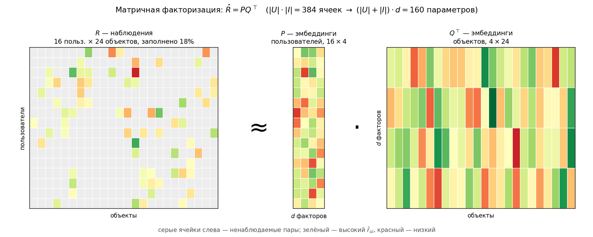
Слева наблюдения $R$: 16 пользователей на 24 объекта, заполнено 18% ячеек, серые клетки не наблюдались. Справа два плотных множителя с $d = 4$ латентными факторами. В левой панели цвет кодирует величину $\hat r_{ui}$ — зелёный высокий, красный низкий; в двух правых панелях тем же цветом показаны сами значения латентных факторов, у которых по отдельности смысла нет. Главное в схеме — счёт параметров в заголовке: вместо 384 независимых ячеек модель хранит 160 чисел. Именно это сжатие и заставляет её обобщать на пары, которых не было в обучении. FunkSVD задаёт задачу в виде регуляризованной weighted squared loss (взвешенной квадратичной ошибки):
$$ \sum_{(u,i)\in\Omega}\left(r_{ui} - \mathbf{p}_u^\top \mathbf{q}_i\right)^2 + \lambda_P \|\mathbf{p}_u\|^2 + \lambda_Q \|\mathbf{q}_i\|^2. $$
Оптимизируют методом стохастического градиентного спуска SGD (по наблюдению или минибатчу). Для наблюдаемых рейтингов обновление по паре $(u,i)$ с шагом $\eta$:
$$ \mathbf{p}_u \leftarrow \mathbf{p}_u + \eta \bigl( e_{ui}\mathbf{q}_i - \lambda_P \mathbf{p}_u \bigr),\qquad \mathbf{q}_i \leftarrow \mathbf{q}_i + \eta \bigl( e_{ui}\mathbf{p}_u - \lambda_Q \mathbf{q}_i \bigr), $$
где $e_{ui} = r_{ui} - \mathbf{p}_u^\top \mathbf{q}_i$.
Слева разреженная матрица оценок $R$ (знаки вопроса — пары без взаимодействий). Справа $\hat R = UV^\top$ с $k=2$ латентными факторами. Градиентный спуск подгоняет произведение только к известным ячейкам: RMSE на них падает с шага на шаг, а ячейки без оценок получают предсказания (зелёные рамки) — это и есть рекомендации. PMF (вероятностная матричная факторизация) задаёт гауссовскую наблюдаемую модель
$$ r_{ui} \mid \mathbf{p}_u, \mathbf{q}_i \sim \mathcal{N}\!\left(\mathbf{p}_u^\top \mathbf{q}_i,\ \sigma_r^2\right), $$
при этом на факторы задают априоры $\mathbf{p}_u \sim \mathcal{N}(\mathbf{0}, \sigma_p^2 I)$ и $\mathbf{q}_i \sim \mathcal{N}(\mathbf{0}, \sigma_q^2 I)$. Максимизация MAP-оценки существенным образом эквивалентна задаче FunkSVD: добавочные члены лог-плотности задают те же $\ell_2$-штрафы с коэффициентами, монотонно выраженными через $\sigma_r,\sigma_p,\sigma_q$.
ALS попеременно фиксирует множества $\{\mathbf{p}_u\}$ и $\{\mathbf{q}_i\}$ и на каждом шаге решает least squares (МНК) с $\ell_2$-штрафом (ridge regression — гребневая регрессия) для активной группы параметров при фиксации противоположной. У пары наблюдений $(u,i)$ выражение ошибки линейно по каждому из векторов $\mathbf{p}_u$ или $\mathbf{q}_i$, поэтому подзадачи малой размерности $d$ замкнуты в явном виде. Нет ручной настройки learning rate (скорости обучения) как при SGD, что удобно на CPU для очень больших разреженных матриц при умеренном $d$.
Для implicit feedback (неявная обратная связь) нули не означают «дизлайк». Пусть $c_{ui} > 0$ — степень confidence доверия к тому, что пользователь $u$ любит объект $i$ (обычно $c_{ui} = 1 + \alpha\, n_{ui}$ для числа взаимодействий $n_{ui}$). WRMF минимизирует
$$ \sum_{u,i} c_{ui}\bigl(y_{ui} - \mathbf{p}_u^\top \mathbf{q}_i\bigr)^2 + \lambda \bigl(\|P\|_F^2 + \|Q\|_F^2\bigr), $$
где $y_{ui} \in \{0,1\}$ — наблюдаемый признак взаимодействия. Положительные пары получают больший вес $c_{ui}$, а нули остаются в сумме с малыми весами, что смягчает трактовку отсутствия события как жёсткого «нет соответствия».
NMF (non-negative matrix factorization — неотрицательная матричная факторизация) добавляет ограничения $\mathbf{p}_u \geq 0$, $\mathbf{q}_i \geq 0$ координатно, давая более интерпретируемые «части–целое» интерпретации признаков, часто через мультипликативные обновления вместо SGD по нулям производной на границе.
Обозначение Идея SVD по полной матрице традиционное разложение редко применимо к разрежённым $r_{ui}$, используют аппроксимации после mean imputation либо латентный семантический анализ (LSA) где уместно FunkSVD SGD по наблюдаемым $(u,i)$ с регуляризацией PMF вероятностный взгляд + MAP $\leftrightarrow$ регуляризованный квадратичный loss ALS чередование закрытых форм МНК по пользователям и объектам WRMF implicit feedback с весами доверия $c_{ui}$ BPR-MF pairwise (попарная) ранжирующая цель, см. ниже Одна только скалярная близость $\mathbf{p}_u^\top \mathbf{q}_i$ часто недостаточна. В задачах с рейтингами добавляют bias terms (смещения):
$$ \hat{r}_{ui} = \mu + b_u + b_i + \mathbf{p}_u^\top \mathbf{q}_i, $$
где $\mu$ — global mean (глобальное среднее), $b_u$ — смещение пользователя, $b_i$ — смещение объекта (популярность, средняя оценка и т.п.). Все параметры обучаются вместе с эмбеддингами под тот же loss.
Для задач implicit recommendation (рекомендации по неявной обратной связи) часто важно не восстановление конкретного значения score (выхода модели), а pairwise ranking (попарное ранжирование): для пользователя позитив $i$ должен быть над негативом $j$:
$$ \hat{y}_{ui} = \mathbf{p}_u^\top \mathbf{q}_i \quad\text{(часто с bias)}\, . $$
Цель BPR для выборки троек $(u,i,j)$, где пользователь имеет наблюденное действие над $i$ и считается более релевантным, чем $j$:
$$ \mathcal{L} = -\frac{1}{|\mathcal{S}|}\sum_{(u,i,j)\in\mathcal{S}} \ln \sigma\!\bigl(\hat{y}_{ui}-\hat{y}_{uj}\bigr), $$
$\sigma(z) = 1/(1+e^{-z})$ — sigmoid.
Это pairwise optimization (попарная оптимизация): модель учится упорядочивать объекты.
Regularization (регуляризация) ограничивает нормы эмбеддингов. Negative sampling (сэмплирование негативов) определяет, как формировать корректные пары или тройки для обучения. Для implicit feedback это критично: отсутствие клика часто есть «ещё не видел», а не нелюбовь к объекту.
Что задаёт простейшая матричная факторизация без смещений?
Аппроксимацию $r_{ui} \approx \mathbf{p}_u^\top\mathbf{q}_i$, то есть сумму по $d$ латентных факторов с разделяемым представлением пользователя и объекта.
Чем FunkSVD от MAP-вид PMF связаны?
Оба приводят к минимизации квадратичной ошибки на наблюдениях плюс $\ell_2$-штрафы на факторы; PMF явно фиксирует вероятностную модель.
Зачем в WRMF вводят $c_{ui}$?
Чтобы по-разному взвешивать уверенность в положительных и нулевых ячейках маски implicit матрицы.
Что оптимизирует BPR loss?
Он увеличивает разрыв score между позитивным и сэмплированным негативным объектом через логарифм sigmoid разности предсказаний.
-
Что такое retrieval в рекомендательных системах?
В индустриальных системах рекомендации часто строят в два этапа:
- Retrieval / candidate generation быстро достаёт сотни или тысячи кандидатов из огромного каталога.
- Ranking медленнее и точнее сортирует этих кандидатов.
Retrieval отвечает за recall: хороший объект должен попасть в кандидаты, иначе ranking уже не сможет его выбрать.
Каталог из миллионов объектов невозможно прогнать через тяжёлую модель на каждый запрос. Retrieval дёшево отбирает тысячи кандидатов по близости эмбеддингов (ANN), ranking точно скорит сотню кандидатов с богатыми признаками, re-ranking накладывает бизнес-правила и разнообразие. Точки — объекты: на каждом этапе их становится на порядок меньше. Two-Tower модель отдельно кодирует пользователя и объект:
$$ e_u = f_\theta(u, context), \qquad e_i = g_\phi(i), $$
а score считает через dot product или cosine similarity:
$$ s(u,i) = e_u^\top e_i. $$
Такой дизайн позволяет заранее посчитать item embeddings и быстро искать ближайшие объекты.
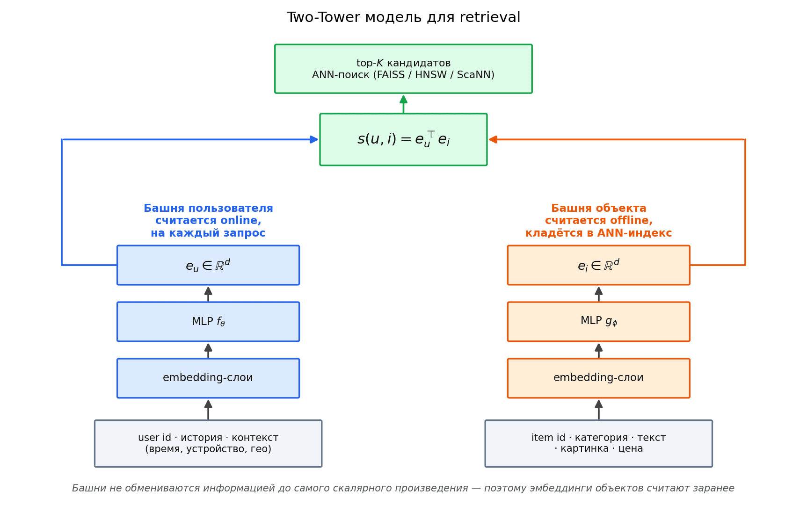
Синяя башня слева кодирует пользователя, оранжевая справа — объект, и встречаются они только в зелёном блоке скалярного произведения. Отсюда и главное свойство для production: башню объектов прогоняют офлайн по всему каталогу и складывают результат в ANN-индекс, а башню пользователя считают online на каждый запрос. Если бы башни обменивались признаками раньше, как это делают ranking-модели, предвычислить каталог было бы нельзя и пришлось бы скорить каждый объект отдельно. Для retrieval нужны негативные примеры:
- random negatives - случайные объекты;
- hard negatives - похожие, но не выбранные объекты;
- in-batch negatives - объекты других пользователей в том же батче;
- dynamic negatives - негативы, которые обновляются по текущей модели.
Для поиска ближайших embeddings используют Approximate Nearest Neighbor:
Метод Идея FAISS библиотека для быстрого vector search IVF кластеризация пространства и поиск внутри ближайших кластеров PQ product quantization для сжатия векторов HNSW граф ближайших соседей ScaNN ANN-подход с оптимизациями для больших embedding search В production важны embedding stores, online retrieval, real-time обновления, fresh embeddings и контроль latency. Retrieval часто комбинирует несколько источников кандидатов: персональные embeddings, популярное, свежие объекты, похожие объекты, правила бизнеса.
Зачем нужен retrieval-этап?
Чтобы быстро сузить огромный каталог до небольшого набора кандидатов с высоким recall.
Почему Two-Tower удобен для retrieval?
Item embeddings можно предвычислить, а online нужно только посчитать user embedding и сделать ANN-поиск.
Что такое hard negatives?
Негативные объекты, которые похожи на позитивные и поэтому заставляют модель учиться более тонкому различению.
Зачем нужен ANN?
Точный поиск ближайших по всему каталогу дорогой; ANN ускоряет поиск ценой небольшой потери точности.
-
Как устроен ranking в рекомендательных системах?
Ranking получает набор кандидатов и сортирует их по вероятности целевого действия: клика, покупки, просмотра, досмотра, подписки или долгосрочной ценности.
В отличие от retrieval, ranking может использовать больше признаков и более тяжёлую модель, потому что работает не со всем каталогом, а с ограниченным числом кандидатов.
Ranking — вторая ступень воронки: на вход приходит уже не каталог, а сотни кандидатов от retrieval, поэтому здесь можно позволить себе тяжёлую модель с признаками пользователя, объекта и контекста. Дальше re-ranking с бизнес-правилами формирует итоговую выдачу. Классические LTR-подходы:
Метод Идея RankNet pairwise loss для сравнения документов или объектов LambdaRank приближает оптимизацию ranking-метрик через lambda gradients LambdaMART градиентный бустинг деревьев с LambdaRank-идеей XGBoost/LightGBM/CatBoost ranking tree-based ranking с query/user группами Популярные архитектуры для таблично-категориальных recommendation features:
- Wide & Deep - memorization + generalization;
- DeepFM, xDeepFM - factorization machines + neural network;
- DCN/DCNv2 - explicit feature crosses;
- DLRM - embedding tables + dense features;
- PNN, NFM, FiBiNET - разные способы моделировать feature interactions;
- AutoInt - attention для взаимодействий признаков.
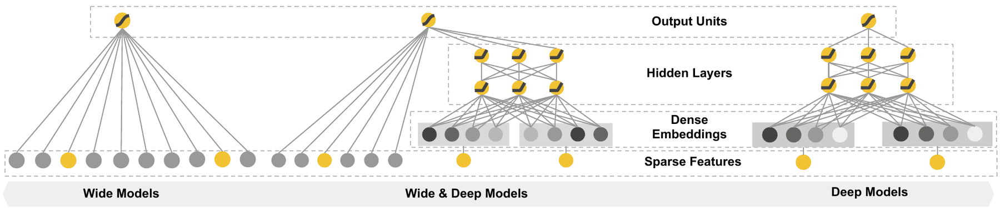
Слева wide-модель: разреженные признаки и их пересечения идут прямо в выходной юнит — это memorization, запоминание частых комбинаций. Справа deep-модель: те же разреженные признаки сначала сжимаются в плотные эмбеддинги, потом проходят скрытые слои — это generalization. Посередине Wide & Deep обучает обе ветви совместно и складывает их в одном выходе. Жёлтые кружки в нижнем ряду — активные ненулевые признаки конкретного примера, серые — нули. Источник: Cheng et al., 2016 Для последовательной истории пользователя используют модели вроде DIN, DIEN, BST, ETA. Они строят representation пользователя не как один фиксированный embedding, а с учётом конкретного candidate item: какая часть истории релевантна этому объекту.
Если retrieval не достал хороший объект, ranking не сможет его поднять. Если кандидаты однообразны, ranking может улучшить CTR, но ухудшить diversity, novelty и долгосрочную удовлетворённость.
Чем ranking отличается от retrieval?
Retrieval быстро достаёт кандидатов из большого каталога, ranking точнее сортирует ограниченный набор кандидатов.
Что такое Learning to Rank?
Семейство методов, которые обучаются упорядочивать объекты, а не только предсказывать независимые вероятности.
Почему деревья часто сильны в ranking?
Они хорошо работают с табличными признаками, нелинейностями, пропусками и feature interactions.
Зачем attention в ranking-моделях?
Чтобы выбирать релевантные части истории пользователя относительно конкретного candidate item.
-
Что такое sequential recommendation?
Sequential recommendation (последовательная рекомендация — рекомендация с учётом порядка событий) формулируется как задача предсказания следующего действия пользователя (next-item prediction — предсказание следующего объекта):
$$ (i_1, i_2, \ldots, i_t) \mapsto i_{t+1}. $$
История задаёт последовательность item ID идентификаторов; контекст важен для медиасервисов, e-commerce-сессий, музыки, поиска.
Семейство Примеры Идея Markov chains (цепи Маркова) first-order / higher-order следующий объект зависит от небольшого префикса Session-based co-visitation, session graphs короткая сессия без долгоживущего профиля RNN-based GRU4Rec, LSTM скрытое состояние обновляется по шагам Transformer-based SASRec, BERT4Rec, TiSASRec self-attention (самовнимание) по позициям GPT-style autoregressive models autoregressive (авторегрессионное) предсказание слева направо Autoregressive recommendation (авторегрессионная рекомендация) использует только прошлый контекст:
$$ P(i_{t+1} \mid i_1, \ldots, i_t). $$
Masked item prediction (предсказание маскированных объектов) скрывает часть позиций и учит модель восстанавливать их по двустороннему контексту.
SASRec (Self-Attentive Sequential Recommendation) кодирует последовательность до индекса $t$ стеком слоёв Transformer (трансформер, как в «Attention is all you need»), но с causal mask (причинной маской внимания): позиция $s$ не видит будущие индексы $>s$. Вход — эмбеддинги объектов плюс positional encoding (позиционное кодирование). Для позиции $t$ выход слоя $h_t$ подаётся в линейный слой к логитам по каталогу (или к dot-product с эмбеддингами всех объектов):
$$ P(i_{t+1} = k \mid i_{1:t}) \propto \exp\bigl( h_t^\top \mathbf{e}_k \bigr). $$
Функция потерь — cross-entropy (перекрёстная энтропия) по следующему наблюдаемому объекту; на практике учитывают усечённую длину истории и negative sampling для softmax по большому каталогу.
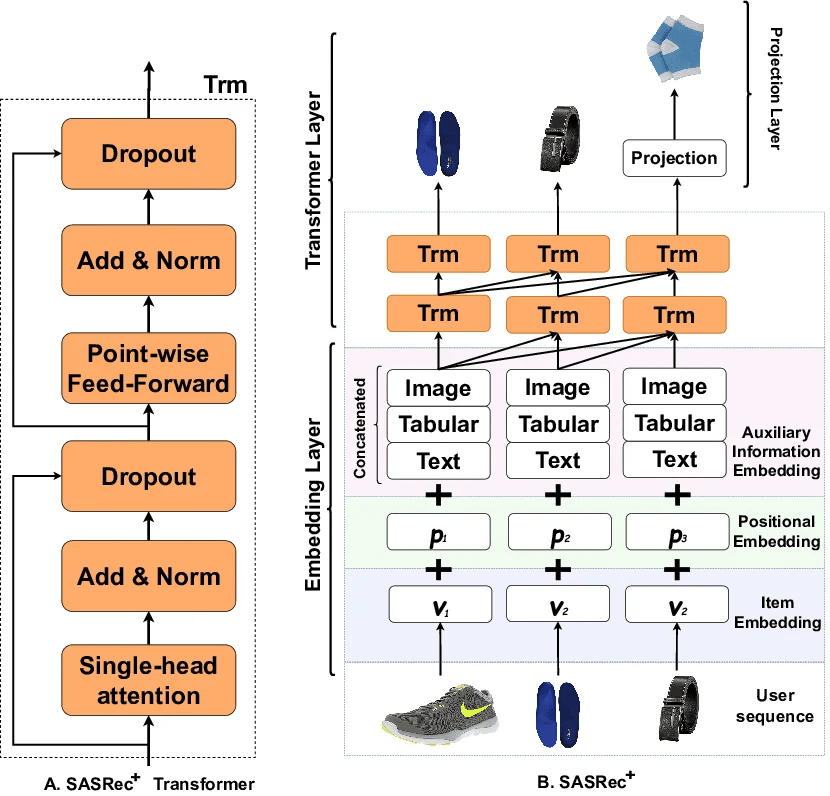
Панель A — внутренность одного блока Trm снизу вверх: single-head attention, Add и Norm, dropout, point-wise feed-forward, снова Add и Norm и dropout; две дуги слева — остаточные связи. Панель B — вариант SASRec с дополнительной информацией: снизу последовательность товаров пользователя, дальше item-эмбеддинги $v$, к ним прибавляются позиционные $p_1, p_2, p_3$ и конкатенация модальностей (Image, Tabular, Text), сверху два ряда блоков Trm и проекция в предсказанный следующий товар. Обратите внимание на стрелки между рядами Trm: они идут только слева направо — позиция не видит будущего. Источник BERT4Rec переносит идею BERT (bidirectional encoder) на последовательность кликов: на вход подают последовательность с частично заменёнными на специальный токен [MASK] позициями; стек Transformer encoder (без причинной маски внутри слоя) строит представления с учётом левого и правого контекста. Обучающая цель — многоклассовая классификация: какой был настоящий объект на маскированных позициях (аналог Cloze-task). На инференсе для следующего объекта задают расширенный контекст и оценивают кандидатов по условному распределению.
$$ P(i_m \mid i_{1:t}\ \text{с маской на позиции } m) \propto \exp\bigl( \mathbf{f}_m^\top \mathbf{e}_{i_m}\bigr), $$
где $\mathbf{f}_m$ — выход кодировщика в позиции $m$, $\mathbf{e}$ — общая таблица item-эмбеддингов.
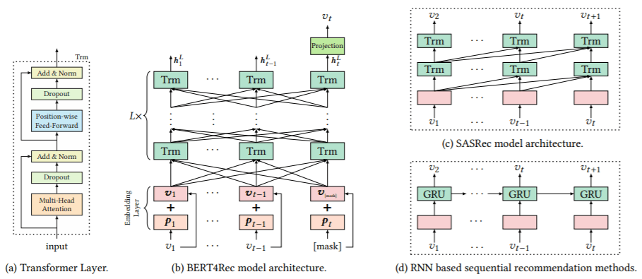
Четыре панели из статьи BERT4Rec. (a) — устройство одного слоя Transformer. (b) — сам BERT4Rec: на входе последовательность $v_1 \ldots v_{t-1}$ и токен [mask] на последней позиции, стрелки между блоками Trm идут в обе стороны, а проекция сверху предсказывает объект $v_t$ именно на маскированной позиции. (c) — SASRec: те же блоки Trm, но связи только слева направо, и каждая позиция предсказывает свой следующий объект, поэтому над позициями стоят $v_2, \ldots, v_{t+1}$. (d) — RNN-подход: одно скрытое состояние передаётся по цепочке от шага к шагу. Источник: Sun et al., 2019 SASRec органичнее сочетается с генерацией left-to-right (слева направо) на инференсе. BERT4Rec сильнее эксплуатирует bidirectional (двунаправленный) контекст при обучении по маске; при онлайновой выдаче важно не «подсматривать» будущие события — используют только прошлый префикс (causal порядок по времени — причинный по времени). Оба семейства стыкуют с truncation (усечением истории), negative sampling и временными особенностями (например, в TiSASRec).
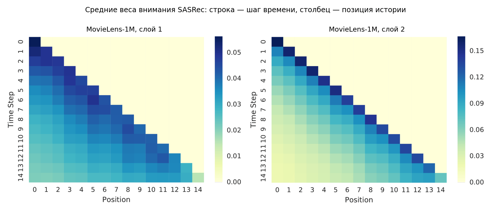
Средние веса внимания SASRec на MovieLens-1M: строка — шаг времени, столбец — позиция в истории, номера идут от 0 до 14. Бледно-жёлтый верхний правый угол обеих карт — это и есть причинная маска: на шаге $t$ модель не смотрит на позиции правее $t$. В слое 1 вес размазан по всей доступной истории, а в слое 2 самая тёмная клетка каждой строки лежит точно на диагонали — второй слой почти целиком опирается на последний просмотренный объект. Шкалы у панелей разные: максимум слева около 0.05, справа около 0.15, так что сравнивать надо форму, а не оттенок. Источник: Kang, McAuley, 2018 Время между событиями тоже несёт сигнал. TiSASRec и аналоги моделируют time intervals (интервалы времени), сезонность и динамику сессий, а не только порядок идентификаторов.
Что такое next-item prediction?
Предсказание следующего объекта по префиксу последовательности пользователя или сессии.
Почему порядок действий важен?
Недавние события часто лучше отражают текущий intent (намерение), чем усреднённый долгосрочный профиль.
Чем SASRec отличается от GRU4Rec?
SASRec использует self-attention и позиционные модификаторы; GRU4Rec — RNN (рекуррентную сеть) с одним скрытым вектором, обновляемым по шагам.
В чём принципиальное отличие BERT4Rec от SASRec по направлению информации?
BERT4Rec допускает двунаправленное согласование по маскированным позициям в обучении; SASRec применяет причинную маску и типично предсказывает только следующий шаг.
-
Какие loss functions используют в RecSys?
Pointwise-подход рассматривает каждую пару $(u,i)$ независимо:
- MSE для рейтингов: $(r_{ui} - \hat{r}_{ui})^2$;
- BCE для клика или покупки;
- Weighted BCE для implicit feedback, где positive и negative примеры имеют разные веса.
Pairwise-подход оптимизирует относительный порядок:
$$ s(u,i^+) > s(u,i^-). $$
Примеры:
- BPR;
- margin ranking loss;
- hinge loss;
- triplet loss.
Для BPR:
$$ L = -\log \sigma(\hat{y}_{ui} - \hat{y}_{uj}). $$
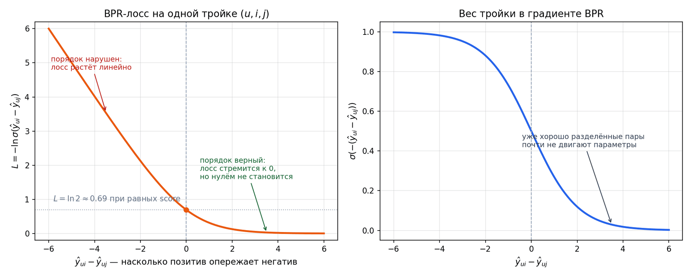
По горизонтали в обеих панелях отложена разность score позитива и негатива. Слева сам лосс: при равных score он равен $\ln 2 \approx 0.69$, при нарушенном порядке растёт почти линейно, а при верном стремится к нулю, но нулём не становится — модель всегда получает стимул увеличивать разрыв. Справа множитель, с которым тройка входит в градиент: в точке равенства он равен 0.5, а для уже хорошо разделённых пар падает почти до нуля. Отсюда практический вывод: случайные лёгкие негативы быстро перестают учить модель, и нужны hard negatives. Listwise-подход работает сразу со списком кандидатов и ближе к ranking-метрикам:
- ListNet;
- ListMLE;
- LambdaLoss;
- SoftRank.
Такие лоссы сложнее, но лучше отражают реальную задачу сортировки top-$K$.
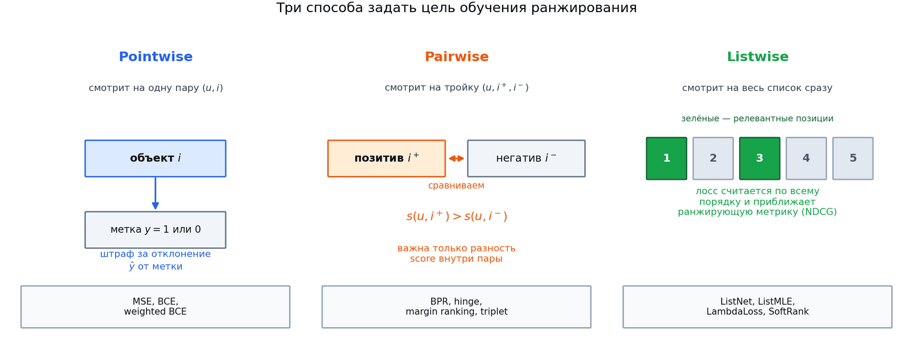
Три колонки различаются тем, что лосс вообще видит за один шаг. Pointwise (слева) получает одну пару пользователь-объект и метку 0 или 1 и штрафует отклонение предсказания от метки. Pairwise (в центре) получает тройку и требует лишь того, чтобы score позитива был выше score негатива — абсолютные значения не важны. Listwise (справа) видит весь упорядоченный список, зелёные клетки — релевантные позиции, и оптимизирует качество порядка целиком. Внизу каждой колонки — типичные представители семейства. Contrastive losses учат embeddings сближать позитивные пары и отталкивать негативные:
- InfoNCE;
- NT-Xent;
- contrastive softmax;
- sampled softmax.
Они часто используются в retrieval, representation learning и self-supervised RecSys.
Что оптимизирует pointwise loss?
Независимое качество предсказания для каждой пары пользователь-объект.
Что оптимизирует pairwise loss?
Относительный порядок: позитивный объект должен иметь score выше негативного.
Почему listwise losses ближе к реальной выдаче?
Потому что рекомендация показывается списком, и важны позиции объектов внутри top-$K$.
Где полезен contrastive learning?
В обучении embeddings для retrieval и self-supervised представлений пользователей или объектов.
-
Какие метрики используют для рекомендаций?
Для top-$K$ рекомендаций часто считают:
Метрика Что измеряет Precision@K доля релевантных объектов среди top-$K$ Recall@K доля найденных релевантных объектов HitRate@K был ли хотя бы один hit в top-$K$ MAP средняя precision по позициям релевантных объектов MRR обратный ранг первого релевантного объекта ROC-AUC / PR-AUC качество бинарного scoring DCG учитывает позицию: релевантный объект выше в списке ценнее.
$$ DCG@K = \sum_{r=1}^{K} \frac{rel_r}{\log_2(r+1)}. $$
NDCG нормирует DCG на идеальную выдачу:
$$ NDCG@K = \frac{DCG@K}{IDCG@K}. $$
Пять позиций выдачи с релевантностями. Вклад позиции — $(2^{rel_i}-1)/\log_2(i+1)$: релевантный объект внизу списка даёт меньше. DCG складывается построчно, IDCG — тот же список в идеальном порядке, NDCG — их отношение. Перестановка самого релевантного объекта на первое место поднимает NDCG с 0.60 до 0.94. 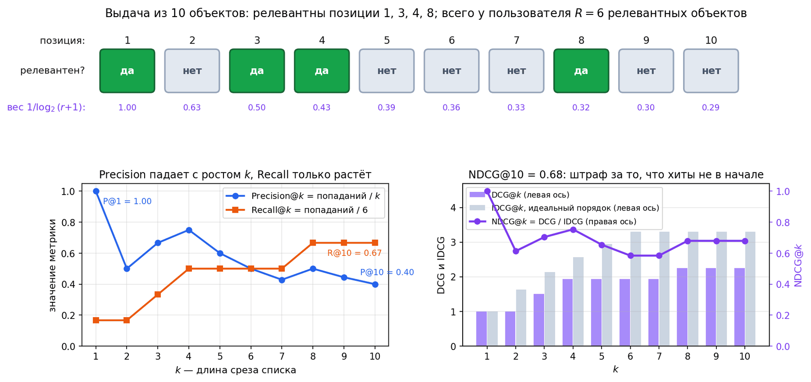
Один и тот же пример во всех трёх панелях: выдача из 10 объектов, релевантны позиции 1, 3, 4 и 8 (зелёные), а всего у пользователя 6 релевантных объектов. Сверху под каждой позицией написан её вес $1/\log_2(r+1)$: он падает с 1.00 на первой позиции до 0.29 на десятой. Слева внизу видно ключевое различие: Precision@k скачет и в среднем убывает (с 1.00 до 0.40), а Recall@k только растёт и упирается в 0.67, потому что два релевантных объекта в top-10 вообще не попали. Справа фиолетовые столбики — накопленный DCG, серые — идеальный IDCG, линия по правой оси — их отношение: NDCG@10 = 0.68, штраф именно за то, что хиты стоят не в самом начале. В production смотрят не только offline ranking:
Метрика Что измеряет CTR (click-through rate) доля кликов по рекомендациям среди показов: насколько список «соблазняет» открыть объект; может расти за счёт сенсационных заголовков, поэтому смотрят в связке с качеством сессии. CVR (conversion rate) доля пользователей (или сессий), совершивших целевое действие после показа/клика: покупка, добавление в корзину, подписка, скачивание — зависит от определения «конверсии» в продукте. GMV (gross merchandise value) валовой объём сделок через платформу (до вычета скидок, возвратов, комиссий — уточняют по внутреннему определению); показывает масштаб монетизации каталога и влияние рекомендаций на продажи. Retention удержание: доля пользователей, вернувшихся в сервис за период (например, day-7 / week-4); отражает долгосрочную ценность системы, а не только разовый клик. Session length длина сессии — время активности за один заход или число действий до ухода; прокси вовлечённости в рамках одного визита. Watch time суммарное время просмотра контента (часто по видео/стримам); ближе к реальной ценности для медиа, чем один CTR по превью. Dwell time время «задержки» пользователя на странице или у блока (до скролла, клика, ухода); сигнал интереса к объекту, но шумный из-за вкладок, отвлечений и разной скорости чтения. Бизнес-метрики зависят от продукта: для видео watch time может быть важнее клика, а для маркетплейса важны конверсия и GMV.
Хорошая система должна быть не только точной:
- Diversity - разнообразие выдачи;
- Novelty - новые для пользователя объекты;
- Serendipity - неожиданные, но полезные рекомендации;
- Coverage - доля каталога, которая получает показы;
- Calibration - соответствие выдачи интересам пользователя по распределению категорий.
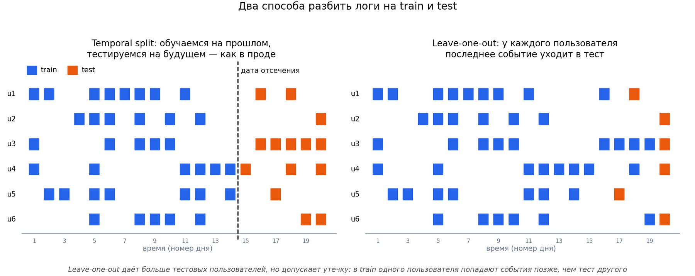
Шесть пользователей, по горизонтали — время в днях, каждый квадратик — одно событие: синий попал в train, оранжевый в test. Слева temporal split: одна общая дата отсечения на 14-м дне, всё после неё уходит в тест, поэтому размер теста у пользователей разный: у u3 туда попадает пять событий, а у u2 всего одно. Справа leave-one-out: в тест уходит ровно последнее событие каждого пользователя, а даты у всех разные. Второй вариант удобнее для сравнения моделей, но допускает утечку: в train одного пользователя попадают события более поздние, чем тестовое событие другого. Чем Precision@K отличается от Recall@K?
Precision@K измеряет чистоту top-$K$, Recall@K - сколько релевантных объектов удалось найти.
Зачем нужен NDCG?
Он учитывает позиции релевантных объектов и нормирует качество на идеальный список.
Почему offline-метрики недостаточны?
Они могут не совпадать с CTR, retention, GMV и долгосрочной удовлетворённостью пользователя.
Что такое coverage?
Доля объектов каталога, которые система вообще рекомендует или показывает.
-
Как устроено representation learning в RecSys?
В RecSys embeddings переводят пользователей, объекты и контекст в векторы:
- user embeddings;
- item embeddings;
- context embeddings;
- session embeddings.
Затем модель сравнивает векторы, объединяет их или подаёт в ranking network.
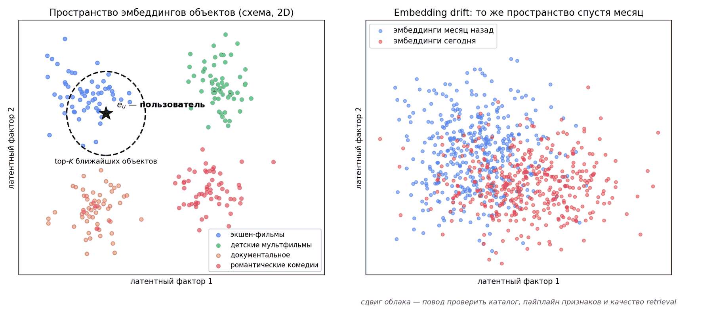
Слева схематичная картина того, ради чего всё это делается: объекты одной тематики оказываются рядом, а пользователь (чёрная звезда) живёт в том же пространстве, и рекомендация сводится к поиску ближайших точек внутри пунктирного круга. Оси не имеют смысла сами по себе — это просто латентные факторы. Справа тот же приём используется для мониторинга: синее облако — эмбеддинги месяц назад, красное — сегодня. Заметный сдвиг вправо-вниз при неизменной модели означает, что поменялись данные или пайплайн признаков, и retrieval стоит перепроверить. Объекты могут иметь разные модальности:
- текст: название, описание, отзывы;
- изображение: обложка, фото товара;
- видео: кадры, звук, динамика;
- аудио: треки, подкасты, речь.
Multimodal recommendation объединяет эти источники, чтобы лучше решать cold start и понимать контент.
Self-supervised подходи создают обучающий сигнал из самих данных:
- contrastive recommendation;
- masked item modeling;
- next-item prediction;
- multi-view learning;
- реконструкция последовательности или графа.
Это особенно полезно, когда explicit labels мало, но логов поведения много.
Сильные embeddings нужны retrieval, ranking, similarity search, cold start, deduplication, recommendations explainability и мониторингу drift. Но embedding сам по себе не гарантирует хорошую выдачу: важны данные, sampling, loss, метрики и serving.
Зачем нужны embeddings в RecSys?
Чтобы представить пользователей, объекты, контекст и сессии в компактном векторном пространстве.
Как multimodal embeddings помогают cold start?
Новый объект можно рекомендовать по тексту, изображению или видео ещё до накопления взаимодействий.
Что такое self-supervised learning для рекомендаций?
Обучение на задачах, где сигнал строится из самих логов: скрыть item, предсказать следующий, сблизить похожие views.
Почему embeddings нужно мониторить?
Их распределение может дрейфовать из-за смены каталога, поведения пользователей, модели или данных.
-
Как графовые модели применяются в рекомендациях?
Рекомендательную задачу представляют как graph (граф):
- узлы пользователей (user nodes);
- узлы объектов (item nodes);
- рёбра взаимодействий;
- дополнительные узлы: категории, авторы, бренды, запросы, теги.
Рекомендация становится задачей signal propagation (распространения сигнала) по графу и обучения node embeddings (эмбеддингов узлов).
Graph Neural Networks (нейросети на графах) используют message passing (передачу сообщений):
$$ h_v^{(l+1)} = \mathrm{UPDATE}\!\left(h_v^{(l)},\ \mathrm{AGG}\!\left\{ h_u^{(l)}:\ u\in\mathcal{N}(v)\right\}\right), $$
$\mathcal{N}(v)$ — окрестность $v$, AGG — агрегатор (mean, сумма, attention и т.д.), UPDATE — нейросеть по конкатенации признаков. В двудольном user–item графе сигнал collaborative filtering (совместная фильтрация) переходит между группами на каждом слое $l$.
Модель Идея NGCF graph convolution с нелинейностями и линейными преобразованиями между слоями LightGCN без нелинейностей и learnable трансформаций между слоями — только лёгкое распространение и взвешенная сумма по слоям PinSage масштабируемое обучение на большом item–item графе с random walk сэмплингом и MapReduce GraphSAGE сэмплирование соседей и обобщение на новые узлы (inductive setting) 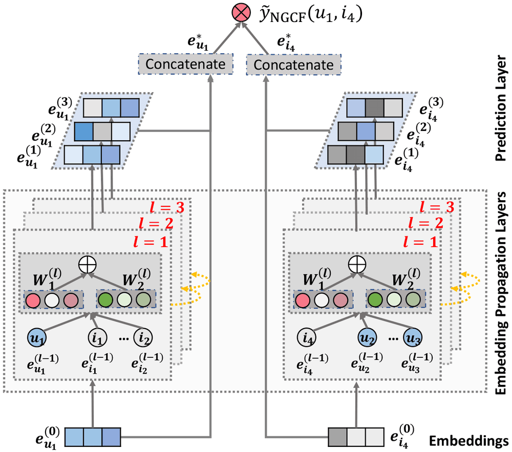
Схема NGCF для одной пары пользователь-объект. Снизу — обучаемые ID-эмбеддинги $e^{(0)}$. Дальше идут слои распространения $l = 1, 2, 3$: внутри каждого вектор узла собирается из векторов соседей, но перед сложением применяются обучаемые матрицы $W_1^{(l)}$ и $W_2^{(l)}$ — именно их LightGCN потом и выбросит. Сверху представления всех слоёв конкатенируются в $e^*_{u_1}$ и $e^*_{i_4}$, и предсказание считается их скалярным произведением. Слева и справа — две зеркальные копии одного механизма: для пользователя соседи это объекты, для объекта — пользователи. Источник: Wang et al., 2019 LightGCN сознательно убирает характерные для GCN (Graph Convolutional Network) нелинейности $\sigma$ и матрицы весов $W^{(l)}$ между слоями в пользу чистой нормализованной суммы соседей (для двудольного графа пользователь–объект). Инициализация $e_u^{(0)}, e_i^{(0)}$ — обучаемые ID-эмбеддинги. Рекуррентное обновление (для одной доли; зеркально для другой):
$$ e_u^{(l+1)} = \sum_{i\in\mathcal{N}_u} \frac{1}{\sqrt{|\mathcal{N}_u|}\,\sqrt{|\mathcal{N}_i|}}\, e_i^{(l)},\qquad e_i^{(l+1)} = \sum_{u\in\mathcal{N}_i} \frac{1}{\sqrt{|\mathcal{N}_i|}\,\sqrt{|\mathcal{N}_u|}}\, e_u^{(l)}. $$
Итоговое представление — layer combination (комбинация слоёв), как правило нормализованная сумма по $l=0,\ldots,L$:
$$ \mathbf{e}_u = \sum_{l=0}^{L} \alpha_l\, e_u^{(l)},\qquad \mathbf{e}_i = \sum_{l=0}^{L} \alpha_l\, e_i^{(l)}, $$
где $\alpha_l$ фиксированы (часто равномерные) или обучаемые. Предсказание релевантности — скалярное произведение $\mathbf{e}_u^\top \mathbf{e}_i$. Упрощение часто даёт лучшее качество и стабильность на чисто bipartite interaction графах, чем тяжёлые GCN.
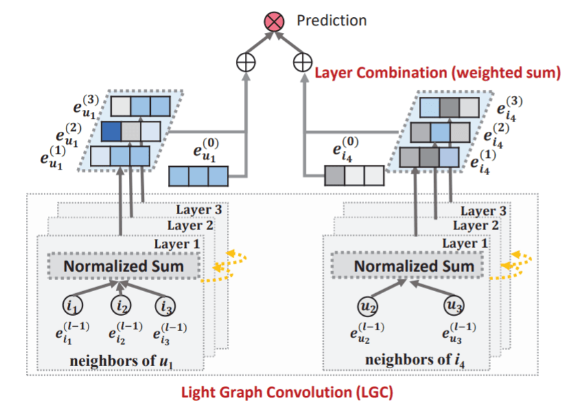
Сравните эту схему с предыдущей: внутри слоя не осталось ничего, кроме блока Normalized Sum по соседям — ни матриц $W$, ни нелинейностей. Слева агрегируются соседи пользователя $u_1$ (это объекты $i_1, i_2, i_3$), справа — соседи объекта $i_4$ (пользователи $u_2, u_3$). Выходы всех слоёв, включая исходный $e^{(0)}$, складываются с весами в блоке Layer Combination, и уже эта взвешенная сумма идёт в предсказание. Источник: He et al., 2020 PinSage (Pinterest) обучает эмбеддинги предметов на большом item–item графе сходства (рёбра из co-engagement — совместных действий пользователей). Вместо полного соседства используют importance-based neighbor sampling (важностное сэмплирование соседей на основе случайных обходов) и convolutional агрегирование по подвыборке соседей — идея родственна GraphSAGE, но специализирована под миллиарды предметов и распределённый конвейер (MapReduce). Эмбеддинг узла обновляется агрегатом по соседям и нейросетевым UPDATE; обучение с hard negative mining по внутренним негативам повышает качество ранжирования.
Knowledge graph recommendation добавляет явные типизированные связи (фильм–жанр, товар–бренд). Heterogeneous graphs (гетерогенные графы) различают типы узлов и рёбер. Hypergraph recommendation моделирует связи групп объектов одним гиперребром.
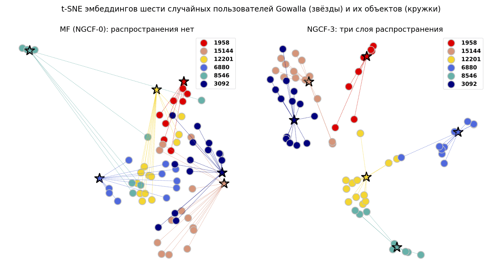
Зачем вообще гонять сигнал по графу. Шесть случайных пользователей датасета Gowalla показаны звёздами, кружками того же цвета — их объекты, пунктир соединяет пользователя с его объектами. Слева обычная матричная факторизация: точки разных цветов перемешаны, и линии тянутся через весь график. Справа NGCF после трёх слоёв распространения: цвета собрались в отдельные компактные группы, каждая рядом со своей звездой. Это и есть коллаборативный сигнал, явно вложенный в геометрию пространства. Источник: Wang et al., 2019 Как представить RecSys как граф?
Пользователи и объекты — узлы, взаимодействия — рёбра (часто двудольный граф).
Что такое message passing?
Итеративное обновление вектора узла из векторов соседей через агрегирование и нелинейность (если есть).
Почему LightGCN популярен?
Убраны лишние нелинейности и преобразования между слоями; остаётся чистая нормализованная neighborhood aggregation (агрегация окрестности) и явная комбинация слоёв для выразительных представлений.
Чем PinSage отличается от чисто user–item LightGCN по постановке графа?
PinSage ориентирован на крупный item-item граф сходства и индустриальный конвейер сэмплирования; LightGCN в классической статье фокусируется на двудольном графе взаимодействий user–item.
-
Зачем нужны exploration и reinforcement learning в RecSys?
Exploitation показывает то, что модель уже считает лучшим.
Exploration иногда показывает менее уверенные объекты, чтобы собрать данные и найти новые хорошие варианты.
Без exploration система застревает в feedback loop: показывает популярное, получает данные только о популярном и становится ещё более уверенной в популярном.
Bandit-подход выбирает действие и сразу получает reward. Популярные стратегии:
Стратегия Суть $\varepsilon$-greedy (epsilon-greedy) с вероятностью $1-\varepsilon$ выбирать «лучшее» действие по текущей оценке mean reward, с вероятностью $\varepsilon$ — случайное; простой baseline для баланса exploration/exploitation, но $\varepsilon$ нужно подбирать или уменьшать со временем. UCB (upper confidence bound) выбирать действие с высокой верхней границей доверительного интервала для оценки среднего reward — чаще тянет «руку» с большой неопределённостью (exploration) и со временем концентрируется на сильных (exploitation); при стандартных предположениях даёт контроль сожаления (regret). Thompson Sampling для каждого действия поддерживается байесовское распределение reward; на шаге сэмплируется «гипотеза», и берётся $\arg\max$ — естественный stochastic exploration, хорош в практике для бандитов с Bernoulli/Gaussian моделями. Contextual bandits перед выбором действия учитывается контекст (пользователь, объект, время, устройство); по сути policy $\pi(a\mid x)$; мост между простым бандитом и полноценным RL, частый выбор в рекламе и персонализации. 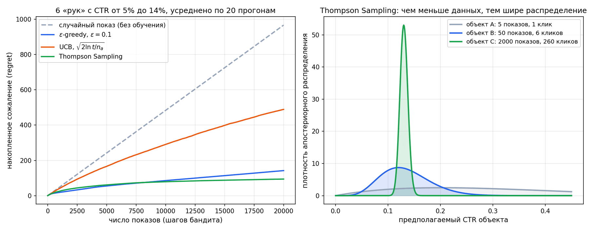
Слева симуляция: 6 объектов с истинными CTR от 5% до 14%, 20000 показов, усреднение по 20 прогонам. Серая пунктирная прямая — случайный показ без обучения, её линейный рост и есть цена отсутствия эксплуатации. Все три стратегии растут заметно медленнее, но в этой постановке с редкими наградами UCB со стандартной константой исследует избыточно и проигрывает $\varepsilon$-greedy и Thompson Sampling. Справа — почему Thompson Sampling вообще работает: у объекта с 5 показами апостериорное распределение CTR почти плоское, у объекта с 2000 показов — узкий пик, и сэмплирование из этих распределений само даёт больше шансов тому, о ком мы мало знаем. Reinforcement learning рассматривает рекомендации как последовательное принятие решений. Это важно, когда цель долгосрочная: retention, learning progress, subscription renewal, user satisfaction.
Сложные случаи:
- slate recommendation: выбрать целый список;
- delayed rewards: reward приходит позже;
- reward shaping: правильно задать сигнал награды.
RL в рекомендациях трудно валидировать offline. Неправильная награда может оптимизировать клики в ущерб доверию, разнообразию или долгосрочной ценности.
Что такое exploration?
Намеренный показ не самых очевидных объектов, чтобы собрать информацию и улучшить будущие рекомендации.
Чем contextual bandit отличается от обычного bandit?
Он учитывает контекст пользователя, объекта и ситуации при выборе действия.
Когда нужен RL-подход?
Когда важна долгосрочная последовательность решений, а не только немедленный клик.
Что такое delayed reward?
Награда, которая проявляется не сразу: например, пользователь вернулся через неделю после серии рекомендаций.
-
Какие bias, fairness и robustness проблемы есть в RecSys?
Частые смещения:
- popularity bias - система чрезмерно продвигает популярные объекты;
- selection bias - данные собраны неравномерно;
- position bias - верхние позиции получают больше кликов просто из-за позиции;
- exposure bias - пользователь не взаимодействует с тем, чего не видел.
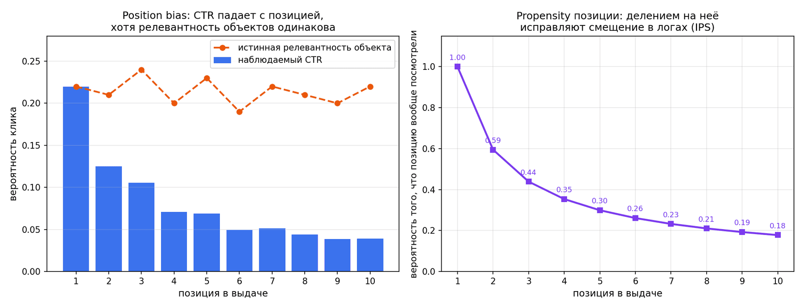
Слева синие столбики — наблюдаемый CTR по позициям, оранжевая пунктирная линия — истинная релевантность объектов, которая в этой симуляции у всех примерно одинакова (0.19-0.24). CTR всё равно падает с 0.22 на первой позиции до 0.04 на десятой: разница вызвана исключительно тем, что нижние позиции реже видят. Справа — та же зависимость в чистом виде: вероятность просмотра позиции, propensity, от 1.00 на первой до 0.18 на десятой. Именно на эти числа делят наблюдения в IPS, чтобы модель не выучила, что верхние объекты лучше просто потому, что они верхние. Fairness в рекомендациях бывает разной:
Вид fairness Что контролируют User fairness сравнимые метрики качества (релевантность, бизнес-исход) для разных групп пользователей (регион, язык, новый/старый, уровень активности); резкий разрыв — повод для constraints и переразбиения выборок. Item fairness доля показов и шанс быть увиденным для качественных, но «не раскрученных» объектов; иначе закрепляется popularity bias и long-tail вымирает в данных. Creator fairness продавцы/авторы сравнимого качества не должны стабильно проигрывать в exposure из-за стартовой метрики или манипуляций; важно для маркетплейсов, стриминга и UGC. Рекомендательные системы атакуют и случайно ломают:
Угроза Как проявляется Shilling attacks боты/синдикаты создают ложные профили, рейтинги или совместные покупки, чтобы поднять или уронить товар; цель — манипуляция выдачей и репутацией. Data poisoning в обучающий лог вносят искажённые события (инъекция в офлайн-датасет, компрометация ETL); модель учится на «яде» и деградирует в проде. Adversarial recommendation подбор входов (текст карточки, fake co-visitation) так, чтобы обмануть scoring или обойти фильтры; смежно с adversarial examples для энкодеров. Bot traffic нечеловеческие клики/показы размывают CTR/CVR, ломают A/B и бандиты; требует антифрода, rate limits и отделения сигналов по устройствам/сетям. Используют debiasing, propensity scoring, exploration, constraints на выдачу, антифрод, мониторинг распределений, ручные guardrails и раздельный анализ метрик по сегментам.
Что такое popularity bias?
Склонность системы непропорционально часто рекомендовать популярные объекты.
Почему exposure bias опасен?
Модель видит feedback только по показанным объектам и не знает, как пользователь отреагировал бы на непоказанные.
Что означает item fairness?
Объекты должны иметь разумный шанс быть показанными, если они релевантны, даже без большой исторической популярности.
Что такое shilling attack?
Атака, где искусственные пользователи или взаимодействия пытаются продвинуть или занизить объекты.
-
Как решать cold start и строить hybrid recommendation?
Cold start бывает нескольких видов:
- новый пользователь;
- новый объект;
- новый рынок или домен;
- zero-shot recommendation для объектов или пользователей без истории.
Главная проблема: collaborative signal ещё не накопился.
У нового пользователя пустая строка в матрице оценок. Стратегии по очереди: популярное (средняя оценка объекта по всем — одно и то же всем), контентная модель (признаки из анкеты и объектов), онбординг (просим оценить несколько объектов — появляется собственная строка для MF) и гибрид, где источники смешиваются с весами. Зелёная шкала — условная уверенность рекомендаций, растёт с каждым шагом. Для cold start используют дополнительную информацию:
- user metadata: регион, язык, подписки, выбранные интересы;
- item metadata: категория, бренд, цена, автор, теги;
- контент: текст, изображения, видео, аудио;
- context features: устройство, время, гео, источник трафика.
Hybrid-система объединяет несколько источников:
$$ score(u,i) = \alpha \cdot score_{collab}(u,i) + \beta \cdot score_{content}(u,i) + \gamma \cdot score_{context}(u,i). $$
В реальности это может быть не линейная формула, а retrieval/ranking pipeline, где разные модели дают кандидатов и признаки.
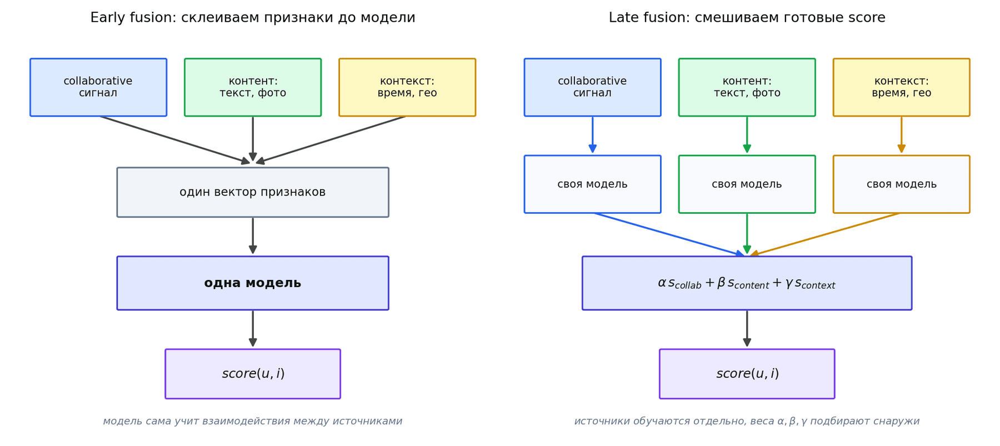
Одни и те же три источника — коллаборативный сигнал, контент и контекст — можно смешать на разной глубине. Слева early fusion: признаки склеиваются в один вектор ещё до модели, и модель сама учит взаимодействия между источниками, но переучивать её приходится целиком. Справа late fusion: у каждого источника своя модель, а наверху складываются готовые score с весами $\alpha, \beta, \gamma$ из формулы выше. Второй вариант проще в эксплуатации и позволяет менять источники по отдельности, зато не умеет ловить взаимодействия между ними. Metadata fusion и multimodal fusion можно делать рано или поздно:
- early fusion: объединить признаки до модели;
- late fusion: смешать scores разных моделей;
- hybrid retrieval: разные retrieval-источники дают кандидатов.
Почему collaborative filtering плохо работает при cold start?
Ему нужны взаимодействия, а у нового пользователя или объекта их ещё нет.
Какие данные помогают new item cold start?
Метаданные, текст, изображения, видео, аудио и другие признаки объекта.
Что такое hybrid recommendation?
Комбинация collaborative, content-based, contextual и других сигналов.
Чем early fusion отличается от late fusion?
Early fusion объединяет признаки до модели, late fusion смешивает outputs или scores нескольких моделей.
-
Как проектировать индустриальную рекомендательную систему?
Индустриальная RecSys часто состоит из нескольких стадий:
- candidate generation;
- filtering and business rules;
- ranking;
- re-ranking;
- blending, diversity и constraints;
- logging и monitoring.
Каждая стадия оптимизирует свой компромисс между качеством, latency и управляемостью.
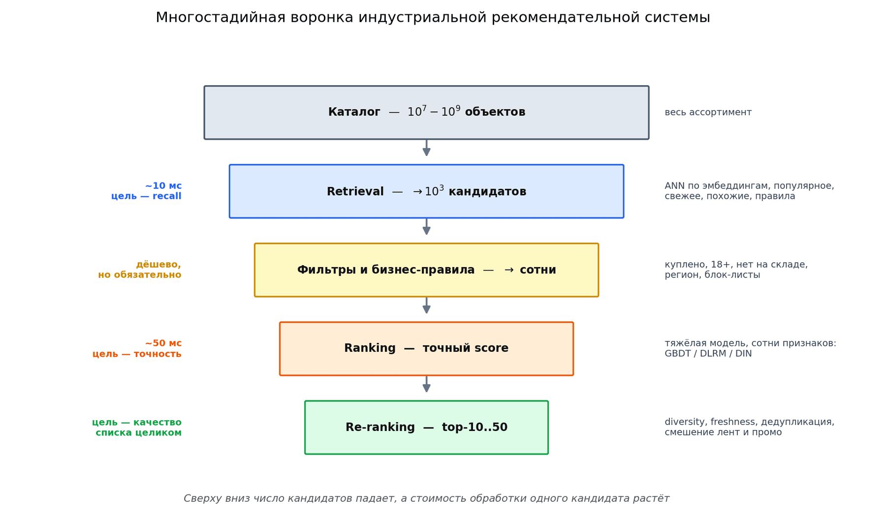
Ширина блока показывает, сколько кандидатов доходит до стадии: от всего каталога в $10^7 - 10^9$ объектов до примерно тысячи после retrieval и десятков после re-ranking. Слева от блоков подписаны их цели (и там, где это осмысленно, бюджет времени), справа — что именно на них происходит. Ключ ко всей схеме: сверху вниз кандидатов становится меньше, зато на каждого можно потратить намного больше вычислений, поэтому retrieval оптимизируют по recall и укладывают примерно в 10 мс, а ranking уже может позволить себе впятеро больший бюджет, сотни признаков и тяжёлую модель. Online inference должен быть быстрым. Используют:
- low-latency feature retrieval;
- batching;
- quantization;
- distillation;
- caching;
- Redis или специализированные stores;
- GPU inference там, где это оправдано.
Компоненты production RecSys:
- feature stores, например Feast;
- Kafka и streaming pipelines;
- embedding stores;
- distributed training;
- parameter servers;
- sharded embeddings;
- batch и real-time pipelines.
Модель может быть хорошей offline, но непригодной online: слишком медленная, требует недоступных признаков, плохо обновляет embeddings, ломает логи или не выдерживает нагрузку.
Почему RecSys обычно multi-stage?
Один этап не может одновременно быстро искать по всему каталогу и точно ранжировать с тяжёлыми признаками.
Что такое re-ranking?
Постобработка выдачи после ranking: diversity, business constraints, freshness, fairness, deduplication.
Зачем нужен feature store?
Чтобы согласованно получать признаки для обучения и online inference.
Почему sharded embeddings важны?
Большие embedding tables могут не помещаться на одной машине или GPU, поэтому их распределяют.
-
Как оценивать RecSys online и offline?
Главный способ проверить влияние на продукт - controlled experiment:
Метод Зачем и как A/B testing случайно делит трафик между контролем и вариантом; измеряет причинный эффект на метрики; для рекомендаций важны длительность, первичная и guardrail-метрики, стратификация по сегментам. Interleaving в одной выдаче чередуются элементы из двух ранжировщиков по честному шаблону; по кликам оценивают, чей список предпочтительнее при том же контексте; нужно меньше трафика, чем для полного A/B всего ранжира. Holdout groups доля пользователей (или карточек каталога) держится на старой политике или без персонализации; даёт долгосрочный baseline и оценку инкремента от RecSys, но создаёт «долг» по данным и справедливости. Guardrail metrics ограничители при эксперименте: latency, доля ошибок, toxicity, diversity/coverage, падение редких сегментов; рост целевой метрики не должен «ломать» платформу и пользователей. Online-метрики могут отличаться от offline, потому что пользователи реагируют на выдачу, а система меняет будущие данные.
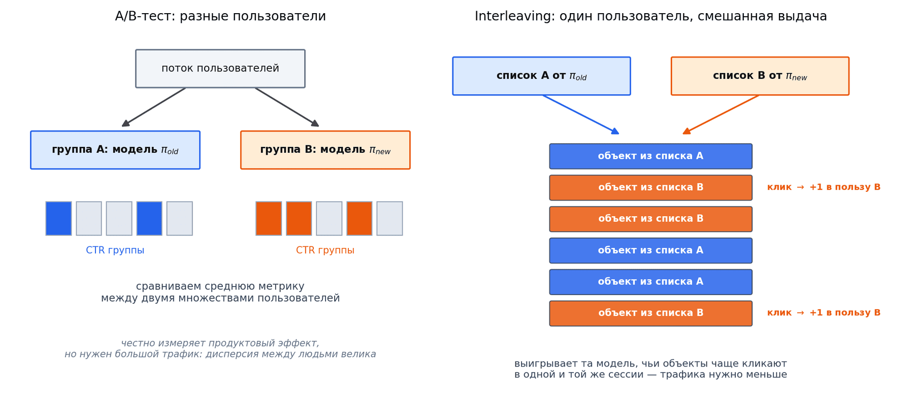
Слева A/B-тест: поток пользователей делится на две непересекающиеся группы, каждая целиком живёт под своей моделью, и сравниваются средние метрики групп (закрашенные квадратики — клики). Разброс между людьми огромен, поэтому нужен большой трафик и длительность. Справа interleaving: списки обеих моделей перемешиваются в одной выдаче одному пользователю, синие карточки пришли от старой модели, оранжевые от новой, и очко получает та модель, чей объект кликнули — здесь оба клика достались новой. Сравнение идёт внутри одной сессии, поэтому шум между пользователями уходит и трафика нужно меньше. Counterfactual evaluation пытается оценить новую политику по логам старой политики. Основные идеи:
Идея Суть IPS (inverse propensity scoring) для каждого лог-события вес $1/\pi_b(a\mid x)$, где $\pi_b$ — старая политика; несмещённая оценка value при корректных propensities, но огромная дисперсия при малых $\pi_b$. Self-normalized IPS нормирует сумму взвешенных наград на сумму весов; снижает дисперсию, но вводит небольшой bias — частый компромисс в практике. Doubly robust (DR) совмещает IPS с моделью outcome $Q(x,a)$: если модель верна, bias уходит; если propensity верна, остаётся устойчивость; при хорошем DR обычно лучше IPS по MSE. Off-policy evaluation (OPE) общий класс методов оценить $\pi_e$, не крутя её в проде: IPS/SNIPS/DR, иногда bootstrap и confidence bounds; критично для безопасного выката и подбора гиперпараметров политики. Нужны propensities: вероятности того, что старая политика показала конкретные объекты.
В production нужно мониторить:
Сигнал Что отслеживать Feature drift смещение распределения входов (категории, время суток, география): модель может деградировать «молча»; алерты по PSI/KS, сравнение с обучающим срезом. Embedding drift меняются нормы/косинусы, кластеры или calibrator по векторам — признак смены контента или поломки пайплайна фичей; коррелирует с качеством retrieval. Data quality пропуски, аномалии, дубликаты, задержки стримов, сломанные join'ы — первичный слой до ML-метрик. Latency p50/p95/p99 по стадиям (retrieval, ranking, rerank): рост забирает конверсию и стабильность SLA даже при «умной» модели. CTR / CVR / retention продуктовые метрики и сегменты: отдельно смотреть holdout, новых пользователей и тёмные long-tail, чтобы не пропустить регрессию. Coverage и diversity не схлопнулась ли выдача в топ-100 популярных; для бизнеса и fairness важно распределение показов по каталогу/селлерам. Доля fallback-рекомендаций сколько трафика уходит на popular, cold-start или rule-based при ошибках модели; резкий рост — тревожный индикатор инцидента. В рекомендациях легко спутать корреляцию и причинность. Пользователь купил объект после рекомендации, но это не всегда значит, что рекомендация вызвала покупку. Поэтому нужны A/B tests, causal inference и корректная логика атрибуции.
Зачем нужен A/B test, если offline-метрика выросла?
Offline-рост не гарантирует улучшение пользовательского поведения и бизнес-метрик online.
Что такое interleaving?
Метод сравнения ранжировщиков, где их результаты смешиваются в одной выдаче и анализируется, кто получает больше кликов.
Что оценивает IPS?
Контрфактическое качество новой политики с поправкой на вероятность показов старой политики.
Что такое embedding drift?
Изменение распределения embeddings во времени, которое может указывать на смену данных, модели или поведения пользователей.
-
Как связаны search и recommendation?
Search и recommendation похожи: обе системы находят релевантные объекты и ранжируют их. Разница в intent:
- в search пользователь явно задаёт query;
- в recommendation система выводит intent из поведения, профиля и контекста.
Для поиска и рекомендаций часто объединяют:
- lexical retrieval;
- semantic search;
- query embeddings;
- user/session embeddings;
- collaborative candidates;
- business rules.
Так появляются unified retrieval systems.
Схема показывает, где именно проходит граница между двумя задачами. Различаются только верхние два уровня: в поиске intent приходит явным запросом и обрабатывается query understanding, в рекомендациях его приходится выводить из профиля и сессии. Ниже обе ветки сходятся в один вектор, и дальше идёт общая машинерия — гибридный retrieval из лексического, семантического и коллаборативного источников, затем ranking и re-ranking. Поэтому в компаниях эти системы часто делит одна команда и один сервинг. Для search ranking важны:
- нормализация query;
- intent classification;
- entity linking;
- query embeddings;
- session search context.
Эти признаки можно использовать и в рекомендациях, например после поисковой сессии.
Search + recommendation fusion полезен в маркетплейсах, медиа и knowledge platforms: поиск говорит, что пользователь хочет прямо сейчас, а рекомендации добавляют персонализацию, похожие объекты и discovery.
Главное отличие search от recommendation?
В search есть явный query, а в recommendation intent чаще неявно выводится из поведения и контекста.
Что такое semantic search?
Поиск по смысловой близости embeddings, а не только по совпадению слов.
Зачем объединять search и recommendation?
Чтобы учитывать одновременно явный запрос, историю пользователя и персонализацию.
Что такое query embedding?
Векторное представление поискового запроса, которое можно сравнивать с item embeddings.
-
Как LLM и foundation models применяются в RecSys?
LLM можно использовать в рекомендациях несколькими способами:
Роль LLM Что делает Prompt-based recommendation в промпт кладут профиль пользователя, историю и каталог (или сжатые описания); модель ранжирует/выбирает пункты или генерирует список id — гибко, но дорого и трудно контролировать на полном каталоге без retrieval. Генерация объяснений текст «почему мы это порекомендовали» рядом с карточкой; улучшает доверие и кликабельность, требует guardrails от галлюцинаций и PII. Reranking кандидатов LLM переупорядочивает десятки-сотни кандидатов, уже отфильтрованных ANN/heuristics; баланс качества и стоимости/latency. Query and intent understanding разбор запроса, нормализация сущностей, уточнение намерения (жанр, бюджет, режим); признаки для поиска и для ранжирования. Item metadata enrichment теги/атрибуты/эмбеддинги из текста и картинок товара; помогает cold start и фильтрам без ручного таксономиста. Conversational recommendation многоходовый диалог: уточнение предпочтений, замена условий; нужна память, политика выдачи и связка с каталогом/API. 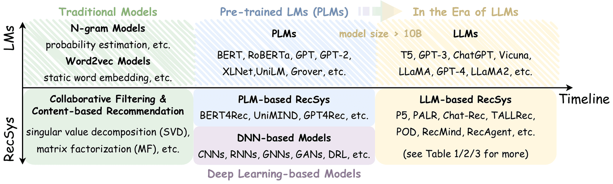
Две дорожки вдоль общей оси времени. Сверху языковые модели: n-граммы и word2vec, затем предобученные BERT и GPT-2, затем LLM после порога примерно в 10 миллиардов параметров. Снизу рекомендательные системы: SVD и матричная факторизация, затем PLM-based (BERT4Rec, GPT4Rec) и DNN-based (CNN, RNN, GNN, GAN, DRL), затем LLM-based (P5, Chat-Rec, TALLRec). Смысл картинки в вертикальном соответствии: каждый скачок в NLP через некоторое время воспроизводился в рекомендациях, и текущая волна LLM4Rec — очередной такой перенос. Источник: Wu et al., 2023 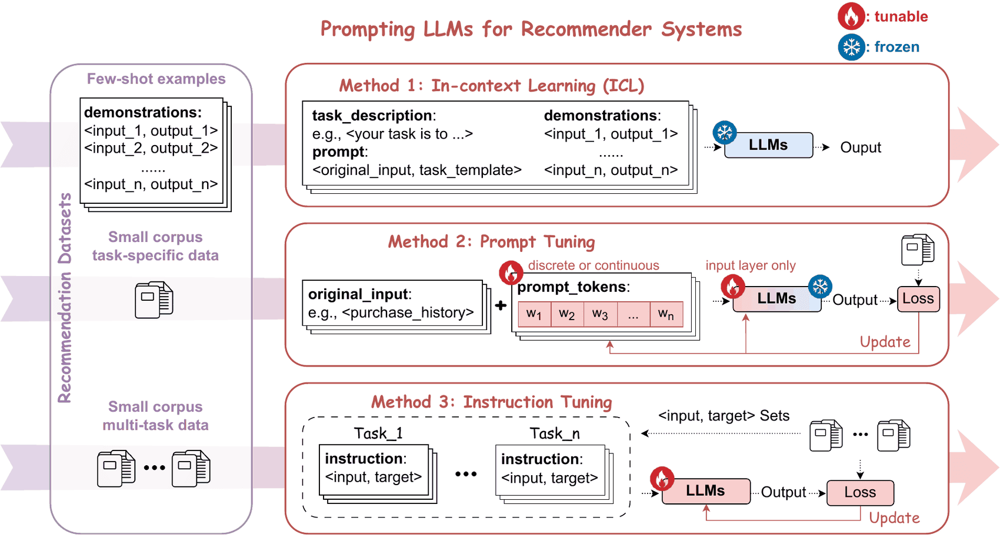
Три уровня вмешательства в модель, сверху вниз по возрастанию стоимости. Method 1, in-context learning: LLM заморожена (синяя снежинка), в промпт кладут описание задачи и несколько примеров. Method 2, prompt tuning: обучаются добавленные к входу prompt-токены $w_1 \ldots w_n$ и у самой LLM только входной слой (подпись input layer only), остальные веса заморожены — красное пламя всюду отмечает то, что обновляется по лоссу, синяя снежинка то, что нет. Method 3, instruction tuning: обучаются уже веса самой LLM на наборах инструкций из нескольких задач. Слева показано, какие данные нужны каждому варианту: от нескольких демонстраций до мультизадачного корпуса. Источник: Wu et al., 2023 Generative recommendation формулирует задачу как генерацию item ids, titles, queries или действий. GPT-style модели могут использовать историю пользователя как последовательность токенов и предсказывать следующий item.
Foundation-подходы используют большие предобученные модели для representations:
Направление Суть Large embedding models общие текстовые/sequence-трансформеры (или их скрытые состояния) как универсальный энкодер пользователей и объектов; fine-tuning или двухэтапное обучение под домен. User behavior modeling предобучение на длинных последовательностях кликов/просмотров (next-item, contrastive) с переносом на downstream-задачу; ближе к representation learning, чем к чату. Multimodal recommendation совместная сеть по нескольким модальностям (текст + картинка + аудио) для единого item/user space; нужна для fashion, short video, музыки. CLIP-like recommendation сопряжение текстовых и визуальных энкодеров общим embedding space (contrastive); «картинка как текст» и наоборот для поиска и cold start по картинке. Vision-language recommendation VLM (BLIP/Florence-подобные) для глубокого понимания превью, субтитров и OCR на изображении товара; тяжелее, но богаче признаки для ранжирования и безопасности. Они особенно полезны для rich content и cold start.
LLM дороги, медленны и могут плохо контролироваться. В production их часто используют не вместо retrieval/ranking pipeline, а как компонент: генерация признаков, объяснения, query understanding, offline enrichment или reranking малого списка.
Где LLM полезны в RecSys?
В понимании запросов, обогащении метаданных, объяснениях, conversational UX и reranking небольшого списка.
Что такое generative recommendation?
Подход, где модель генерирует следующий объект или рекомендацию как последовательность токенов.
Почему multimodal foundation models помогают cold start?
Они извлекают смысл из текста, изображений и видео без необходимости ждать много взаимодействий.
Почему LLM редко заменяет весь RecSys pipeline?
Из-за latency, стоимости, управляемости и необходимости строгого контроля качества выдачи.
-
Какие paper'ы важны для RecSys?
Paper Почему важен Matrix Factorization Techniques for RecSys (Koren, Bell, Volinsky, 2009) каноническое изложение matrix factorization после Netflix Prize The Netflix Prize (Bennett, Lanning, KDD Cup 2007) постановка масштабного соревнования и влияние на collaborative filtering BPR: Bayesian Personalized Ranking from Implicit Feedback (Rendle et al., 2012) классическая pairwise цель для implicit feedback Paper Идея Deep Neural Networks for YouTube Recommendations (Covington et al., 2016) двухстадийная схема candidate generation + ranking Wide & Deep Learning for Recommender Systems (Cheng et al., 2016) memorization + generalization в production-ранжировании The Deep Learning Recommendation Model (Naumov et al., 2019) embedding-тяжёлая архитектура DLRM для индустриальных табличных + категориальных признаков Graph Convolutional Neural Networks for Web-Scale Recommender Systems (Ying et al., KDD 2018) — PinSage масштабируемые рекомендации на большом item graph Направление Paper Sequential Self-Attentive Sequential Recommendation (Kang, McAuley, 2018) — SASRec Sequential BERT4Rec: Sequential Recommendation with Bidirectional Encoder Representations from Transformer (Sun et al., 2019) Graph Neural Graph Collaborative Filtering (Wang et al., 2019) — NGCF Graph LightGCN: Simplifying and Powering Graph Convolution Network for Recommendation (He et al., 2020) 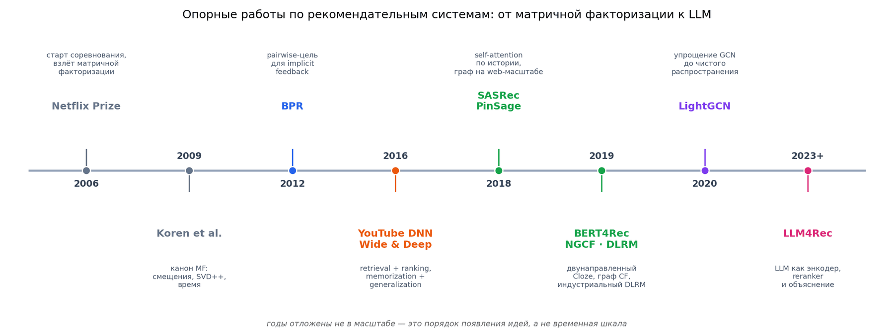
Работы из таблиц выше плюс текущая волна LLM4Rec, выстроенные в один порядок чтения: от Netflix Prize и канонической матричной факторизации через BPR к индустриальным YouTube DNN, Wide & Deep и DLRM, дальше к трансформерам над последовательностями (SASRec, BERT4Rec) и графам (NGCF, PinSage, LightGCN) и наконец к LLM4Rec. Точки расставлены равномерно, а не пропорционально годам, так что читать стоит именно порядок идей. Под каждым названием — в одну строку то, чем работа важна. Разумный порядок: matrix factorization и BPR, затем YouTube / Wide&Deep / DLRM как индустриальные опорные точки, далее SASRec и BERT4Rec для sequence modeling (моделирования последовательностей), затем LightGCN и PinSage для graph-based recommendation (графовых рекомендаций).
Почему Netflix Prize важен для RecSys?
Он показал силу collaborative filtering, матричной факторизации и ансамблей на крупной публичной задаче.
Что важно в статье YouTube Recommendations?
Явное разделение candidate generation и ranking для масштаба и задержки в продакшене.
Почему Wide & Deep стал влиятельным?
Он объединил запоминание частых feature crosses и обобщение через глубокую сеть.
Какие статьи читать для sequential recommendation?
SASRec и BERT4Rec как базовые трансформерные подходы к последовательностям кликов.